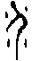
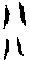
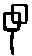
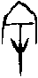

16  豫卦 雷地豫
豫卦 雷地豫
豫，利建侯、行師。初六，鳴豫，凶。六二，介于石，不終日，貞吉。六三，盱豫，悔遲有悔。九四，由豫，大有得。勿疑，朋盍簪。六五，貞疾，恒不死。上六，冥豫，成有渝，无咎。
【卦名】
今本：豫 帛書：餘 歸藏：分 秦簡：介 上博簡： 清華簡：介 帛書易傳：余、予 海昏：伃
鄭玄虞翻：逸。
今本《周易》卦名作豫，經文應解釋為豫樂，安逸、快樂，但綜合《易傳》，豫也有豫備，豫防之義。
歸納之後，豫卦有三個層面的意義：一是預備、預防，有備無患。二是有餘，寬裕。三是豫樂、逸樂。
豫通「預」，預備、預防的意思，如既濟《象傳》：「君子思患而豫防之。」《爾雅．釋言》「豫，敘也」疏：「事豫備者亦有敘也。」《禮記．學記》：「禁於未發之謂豫。」《繫辭傳》：「重門擊柝，以待暴客，蓋取諸豫。」這都是取預備，有備無患之義。
有所預備者就能夠寬裕，事情有餘裕，這也是豫的第二層意思。
《說文》：「豫，象之大者。賈侍中說：不害於物。從象予聲。」段注：「引伸之，凡大皆偁豫。」「大必寬裕，故先事而備謂之豫，寬裕之意也。寬大則樂。」
豫從予從象，本義是大象中的大象。象已是夠大，大象中的大象旨在表現形體很大，又引申為裕，寬裕的意思，又有娛樂或愉快的意思。帛書本做「餘」，或取其寬裕而有餘之意。上海博物館楚竹書作，為「余」下多一丿，應是「余」字的異體，而帛本易傳亦作「余」或「予」，通「餘」也通「豫」。
寬裕者則得以安逸、豫樂，《爾雅》：「豫，安也。」「豫，樂也。」這也是《周易》、《詩經》、《尚書》等經典中最常用的意思。例如，《詩．白駒》：「爾公爾侯，逸豫無期。慎爾優游，勉爾遁思。」〈板〉：「敬天之怒，無敢戲豫。」《尚書》：「太康尸位。以逸豫滅厥德」、「視乃厥祖，無時豫怠」、「不惟逸豫，惟以亂民」、「無康好逸豫」。
傳統通解亦以豫為樂，《象傳》：「豫，先王以作樂崇德。」馬融：「豫樂也。」鄭玄：「坤，順也。震，動也。順其性而動者，莫不得其所，故謂之逸。逸，喜逸說樂之貌也。」朱熹：「豫，和樂也。人心和樂以應其上也。」虞翻則解釋為逸，逸樂之義。與豫旁通的小畜卦中有多處以豫象來注解，豫都直接稱為逸，如「自我西郊」虞翻注曰「逸坤為自我」，初九復自道注曰「謂從逸四之初成復卦，故復自道」。
凡此皆以豫為豫樂、安逸的意思。
分與介
馬國翰輯本《歸藏》卦名為「分」，秦簡《歸藏》及清華簡皆做「介」，這兩個字形體不但相近，而且意思也可相通。分為分別，介則是分界，畫清界線之義。
《說文》：「分，別也。」「介，畫也，从八从人，人各有介。」段注：「畫部曰：畫，畍也。按：畍也當是本作介也。介與畫互訓，田部畍字蓋後人增之耳，介畍古今字。分介則必有間，故介又訓間，《禮》擯介、《左傳》介人之寵皆其引伸之義也。」
介的甲骨文，有兩大解釋，一是分介，與《說文》定義差不多。另一說認為象戰士穿著甲衣，為甲冑的意思，也可指披甲之英雄戰士。《禮記》中「介」最常當做甲冑使用。不過，《說文》說的「畫也。從八從人」，又有點像甲骨文，此字從上下兩個八字，以示分別、分界之義。
《周禮》「其動物宜介物」注：「介物，龜鱉之屬。」介即取甲冑之引申義。《禮記》「陽門之介夫死」注：「介夫，甲衛士。」「介者不拜」疏：「介，甲鎧也。著鎧者不為式敬，故宜無所拜之也。」「介蟲」即「甲蟲」。凡此皆取甲冑或其引申義。
介又可解釋為大，《爾雅》：「介，大也。」晉卦六二「受茲介福，于其王母」王弼注：「受茲大福于其王母也。」虞翻注：「乾為介福，艮為手，坤為虛，故稱受。介，大也。」
綜觀介的字義，其本義甲冑或武士，與豫備之義是互通的，都有戒備、防備之義，也是《繫辭傳》所說的：「重門擊柝，以待暴客，蓋取諸豫。」這也可以解釋為何豫卦卦辭說「利建侯、行師」。至於介做「大」則與豫的本義互通，豫本是象中之大者，用形體之龐大進一步引申至寬裕、有餘、豫樂的意思。
至於介與分解釋為界限，分別，似乎較難與現有《周易》卦義關聯起來。但在謙卦中我們討論過，謙卦古卦名可能為兼，兼併之義。兼併為合，那麼與兼併相反的當然就是分別、分介（界）了。又六二「介于石」孔子以君子之分辨能力來詮釋，而傳統亦有解釋為耿介者，可能都是從分介義引申而來。
餘、余、予
《曲禮》鄭注：「余、予古今字耳。蓋古稱予，今稱余，其義同。」
帛本易傳中豫卦或作余或作予，余和予為古今字，帛本的「餘」和今本「豫」也可能是「余」和「予」之假借，而上博簡的應是余的異體字或傳抄之誤。
《說文》：「予，推予也，象相予之形。」段注：「象以手推物付之。」「余，語之舒也。」段注：「《釋詁》云：余，我也。余，身也。孫炎曰：余舒遲之身也，然則余之引伸訓為我。《詩》、《書》用予不用余，《左傳》用余不用予。…余予古今字。」予原為給予之義，余則是辭語舒緩，引申亦可指身體之舒緩。但予、余兩字後皆用做「我」之自稱，為古今字。予字甲骨文作，由於資料少，不得其義，但依《說文》當是給予、賜予的意思。而余字作，學者認為象簡陋之屋，卜辭中亦作第一人稱用，相當於「我」字。
余和予兩字除了皆作「我」之外，也可與豫相通。《雜卦》說：「豫怠也。」怠為怠慢的意思，與余之徐緩、舒遲意思相近。又《史記．龜策列傳》記載神龜被「漁者豫且」捕獲之事，《莊子．外物》作「漁者余且」。此亦可見古文之余和豫相互假借。
【卦義】
豫卦的核心意義當為豫樂、安逸，但背後亦有預備、預防的意思，這是因為「生於憂患，死於安樂」，豫之逸樂當以有備無患而能寬裕做為依靠，而其凶應、忌諱則是耽溺，流於怠惰則凶。
卦象為內坤順，外雷震，雷出地上，柔順以動。這是一種順水推舟，順其自然式的行動。反觀大壯卦為剛健於內，雷動於外，為剛以動，是一種剛暴式的行動，因此容易產生衝撞與衝突。雷在地上，雷震為春，為春臨大地之象，所以《象》曰「雷出地奮，豫。先王以作樂崇德，殷薦之上帝，以配祖考。」言豫卦為雷動震奮的時候，大地鼓舞，萬物繁茂。因此古人以此開始作樂以崇揚道德，祭祀上帝與祖先。
《序卦》說：「有大而能謙必豫，故受之以豫。」就卦序來看，豫卦與謙卦是相綜的一對對卦，是繼同人、大有而來。同人與大有是國家經動亂（否卦）之後，重整秩序，天下重回太平，而開始重新尋找長治久安之道。首先告戒的是要謙卑自牧，然後則是以豫樂（音樂、娛樂）陶養心性。
禮與樂是儒家治國理想的兩項主要措施，禮道可從履卦與謙卦之中得見，履與謙彼此旁通，為禮的一體兩面，一實踐於外，一虛心於內，謙亦可謂禮之內化。而豫卦講的則是樂，也就是以娛樂、音樂來教化並陶冶心性。因此就儒家來說，謙豫皆關乎民心之治理。
《禮記．樂記》説：「樂者為同，禮者為異。同則相親，異則相敬。樂勝則流，禮勝則離。合情飾貌者禮樂之事也。禮義立，則貴賤等矣；樂文同，則上下和矣。」在履卦裡，講求的是尊卑上下之份際，因為禮以別異，所以履道大忌在於上下不分，不明尊卑，踰越本份，吉道在於戒慎與尊敬。而豫道則重在於合，因此其吉道為感情的交流，用心傾聽。忌則在於不知節制，流於淫逸、耽溺、怠惰。《雜卦傳》「豫怠也」就是以豫之流敝而言。
再就豫之三義來看，豫卦之吉在於有備而無患，防患於未然。以充份的準備而讓事情寬裕，才能安心享樂。
豫卦典故可能來自於描繪周武王伐紂之樂舞《象》舞。李道平《周易集解纂疏》：「豫，樂也，而名以《大武》，建侯行師之意，寓其中矣。」聞一多《周易義證類纂》：「是《大豫》之源出於《象》，實則象與予豫一語之轉。」（按：《大豫》為晉之樂舞。）「豫為武王舞名，建侯行師即舞中所象之事。」《象》即《大武》。《禮記》中《象》及《武》（大武）經常併稱，如《文王世子》：「下管象，舞大武」，注：「象，周武王伐紂之樂也。以管播其聲，又為之舞，皆於堂下。」疏：「大武即象也，變文耳。」「《象》謂《周頌．武》也，以管播之。」
豫，利建侯、行師。
- 彖曰：豫，剛應而志行，順以動，豫。豫順以動，故天地如之，而況建侯行師乎？天地以順動，故日月不過，而四時不忒。聖人以順動，則刑罰清而民服。豫之時義大矣哉。
- 象曰：雷出地奮，豫。先王以作樂崇德，殷薦之上帝，以配祖考。
- 《繫辭》：重門擊柝，以待暴客，蓋取諸豫。
- 《序卦》：有大而能謙必豫，故受之以豫。豫必有隨，故受之以隨。
- 《雜卦》：謙輕而豫怠也。
【今解】
豫樂，利於建立諸侯，發動軍隊。
《彖傳》說：「豫，剛應而志行，順以動，豫。」得到群眾的呼應又志在必行，順勢而動，所以為豫。此言建立諸侯，發動軍隊，皆順應民心，而且還有剛強的決心去執行。
鄭玄：「震又為雷，諸侯之象。坤又為眾，師役之象。故利建侯行師。靁出地奮。奮，動也。靁動於地上，而萬物豫也。」《正義》：「謂之豫者，取逸豫之義，以和順而動，動不違眾，眾皆說豫，故謂之豫也。動而眾說，故可利建侯也。以順而動，不加无罪，故可以行師也。」
《象傳》則說：「雷出地奮，豫。先王以作樂崇德，殷薦之上帝，以配祖考。」雷動於地上為萬物震奮之象，先王因這樣的啟發而作了音樂來崇揚道德，誠心的將它奉獻給上天和祖先們。李道平認為此樂即《大武》，又名《象》。
周天子建立諸侯，以做為周室之屏藩，此為預防、防禦之道。因此這個「豫」除了解釋為豫樂，或是樂舞之名，也可理解為預備、預防的預。
豫與小畜相錯，虞翻說的旁通。豫在展示武德，所以卦辭說建侯行師；小畜則在展示文德，象傳說「君子以懿文德」。豫為有餘充裕而逸樂，小畜為寡而密雲不雨自我西郊。
【字義】
利建侯：利於建立諸侯。周天子建立諸侯以鞏固王權，其分封的諸侯主要為周天子的姬姓王族或是功臣，藉以做中央之屏藩，鞏固周天子之權。於現今之公司人事，可比喻為指派分公司或地區性的總經理。侯原義為箭耙，《說文》：「春饗所射侯也。从人从厂，象張布，矢在其下。天子射熊虎豹，服猛也；諸侯射熊豕虎；大夫射麋，麋，惑也；士射鹿豕，爲田除害也。其祝曰：毋若不寧侯，不朝于王所，故伉而射汝也。」建侯亦有建立目標之隱喻。
殷薦之上帝，以配祖考：很隆盛的進獻給上帝，以配合祖先之光榮。殷，盛大。薦，進獻之祭祀。祖考，祖先。
重門擊柝，以待暴客，蓋取諸豫：用雙重的門來防禦，晚上打木梆子，以此對待強暴之客，這種預防之道是取象於豫卦。柝，音拓，夜間巡更敲擊用的梆子。
謙輕而豫怠：謙為虛故輕，豫為樂故怠。怠為怠慢之義，虞翻作怡：「豫薦樂祖考，故怡。怡或言怠也。」
【筮例】
《國語‧晉語四》重耳親筮得晉國，得貞屯悔豫，本卦為屯，之卦為豫。
晉國公子重耳在外流亡十九年，秦國是他回到晉國前的最後一站。他的姐姐穆姬是秦穆公夫人，她與秦穆公的結婚也是「秦晉之好」的開始。但由於晉惠公與晉懷公的不仁不義，而讓秦穆公決定擁立重耳為晉君，因此重耳到秦國時，秦穆公以對待國君之禮對待他，還把五個女兒嫁給了重耳，其中包括了懷嬴。懷嬴也是子圉（重耳姪兒，晉懷公）在秦當人質時的夫人。
在秦國期間，重耳親自筮問一卦，看是否能夠得到晉國？結果得到屯之豫，三個爻變。筮史多數見到屯卦都說不吉。
公子親筮之，曰：「尚有晉國。」得貞屯悔豫，皆八也。筮史占之，皆曰：「不吉。閉而不通，爻無為也。」
「貞屯悔豫」意思是以屯卦為貞，豫卦為悔，即屯之豫卦。由於三個爻變，變爻太多而不用變爻占解，因此筮史解釋說「爻無為也」。變爻也就是六、九筮數太多，而不用六也不用九時，當以卦來占解，因此曰「皆八也」。春秋筮例中用「八」來表達卦象時，都會改用卦來占解而無用爻，這個例子還有穆姜入東宮之前所占得的「艮之八」，史官補充說是「艮之隨」，這是五個爻變的卦，因此以之卦隨的卦辭卦義來占解。董因筮重耳返晉國得「泰之八」，也是多變爻的例子，只是變爻數不知，該卦也是以泰卦卦辭卦義占解。
雖然筮史說不吉，但司空季子以屯卦和豫卦卦辭都有「利建侯」而認為這代表重耳可以成為晉國國君，並成為輔弼周天子的諸侯王。司空季子以卦象來分析說：
震，車也。坎，水也。坤，土也。屯，厚也。豫，樂也。車班外內，順以訓之，泉原以資之，土厚而樂其實。不有晉國，何以當之？震，雷也，車也。坎，勞也，水也，眾也。主雷與車，而尚水與眾。車有震，武也。眾而順，文也。文武具，厚之至也。故曰屯。其繇曰：「元亨利貞，勿用有攸往，利建侯。」主震雷，長也，故曰元。眾而順，嘉也，故曰亨。內有震雷，故曰利貞。車上水下，必伯。小事不濟，壅也。故曰「勿用有攸往」，一夫之行也。眾順而有武威，故曰『利建侯』。坤，母也。震，長男也。母老子彊，故曰豫。其繇曰：『利建侯行師。』居樂、出威之謂也。是二者，得國之卦也。
後來果如司空季子的預測，秦國擁立重耳回到晉國，殺了懷公之後重耳也成為晉國國君，也就是晉文公。
初六，鳴豫，凶。
象曰：初六鳴豫，志窮凶也。
【今解】
大聲玩樂，凶。
過於淫逸，而至鳴叫。豫之吉在於節制、防患未然，忌在淫逸放縱。王弼：「處豫之初，而特得志於上，樂過則淫，志窮則凶，豫何可鳴？」依王弼注，初六處於豫樂的開始，一開始就不知自我節制。九四為豫卦卦主，也是唯一陽爻，初六與九四相應，自恃受到九四榮寵，失態放縱，因此而凶。
【字義】
鳴豫：高聲逸樂。鳴為鳴叫，情不自禁而高聲歡樂。鳴豫這裡有多種解釋。一歡呼、鳴叫。二是以鳴為呼叫，取中孚卦「鳴鶴在陰，其子和之」的意思。則初六之所以為凶，在於隨意呼叫九四要求得九四的呼應，九四為卦主，陽居臣位，因此可以豫樂，初六隨意呼叫，加上以柔居陽，不當位，代表其身份地位不相當，所以為凶。三是以鳴為名，名豫即以玩樂而聞名。
六二，介于石，不終日，貞吉。
- 象曰：不終日，貞吉，以中正也。
- 《繫辭》：子曰：知幾其神乎！君子上交不諂，下交不瀆。其知幾乎！幾者動之微，吉之先見者也。君子見幾而作，不俟終日。易曰：「介于石，不終日，貞吉。」介如石焉，寧用終日，斷可識矣。君子知微知彰，知柔知剛，萬夫之望。
【今解】
敲擊演奏石磬，不到一日，貞定為吉。
此言豫樂有所節制，豫道以節制為吉。不終日言有所節制，不至終日即停止。六二居互體艮之下，知所止之象。
或：守衛于石，不到一日就可抵定，貞定為吉。介為守、禦之義。介于石，以石做防禦。相反的就是困卦六三的「困于石，據於蒺藜」，孔子：「非所困而困焉，名必辱。非所據而據焉，身必危。」
傳統解釋以介為耿介，言君子品格耿介，堅定如石，不待終日就能從正而吉。
依《繫辭》，介于石即介如石，言對於事理之分辨清楚而堅定如石。不終日言判斷決策之快速，不等一天過去就可以見機而行事，貞正則吉。
所引孔子之解釋意思大致為：君子往上交往不會諂媚，往下與人交往不會汙辱他人。這樣的君子知道事情最微妙的機關。所謂的幾，就是動作的最微妙之處，也是可以率先見到吉兆的地方。君子見幾而動作，不用等待一日的時間。所以《易經》說：「介于石，不終日，貞吉。」分辨有如石頭一樣地堅定，那裡需要一日的時間，判斷馬上就可以清楚明白。君子既知道最微妙而隱幽的，也知道最明白而顯著的；既懂得陰柔之道，也懂得剛健之道，這也是萬夫所期望的。
六二介於初六與六三之間，初六不當位又與九四相應，六三亦不當位而與九四比應，兩者都因與九四的關係而流於放縱，沉溺於豫樂而凶。只有六二，介於兩者之間，當位而居中，志向有如石頭一樣堅定，不為左右所動。故言貞吉。
【字義】
介于石：當作「扴于石」。馬融：「扴，觸小石聲。」扴為敲擊石頭的聲音，或敲擊石頭。段玉裁《說文》注：「易介于石，馬本作扴，云觸小石聲。按：扴于石，謂摩磢于石也。」摩磢即摩擦。石為「金石絲竹」之石，即磬，古時以玉石所做成的敲擊樂器。《樂記》：「金石絲竹，樂之器也。」《周禮》八音：「金、石、土、革、絲、木、匏、竹。」疏：「金，鍾鎛也。石，磬也。土，塤也。革，鼓鼗也。絲，琴瑟也。木，敔也。匏，笙也。竹，管簫也。」《虞書》 夔曰：「於，予擊石拊石，百獸率舞，庶尹允諧。」扴于石講的即時古代演奏作樂之狀，豫樂應知所節制，因此說「不終日貞吉」。《繫辭》：作「介如石」：「介如石焉，寧用終日，斷可識矣。」言判斷明確而堅定如石。此以介為分別之義。介為「界」的本字，間隔、界線、分別的意思，引申為判斷、分判。介也有甲冑之義，引申為防禦、防備，介于石，為以石為防備，防備堅固如石。然而這與後文「不終日貞吉」於文意不通順。「介」鄭玄作「砎」：「砎，謂磨砎也。」砎於石為砥礪、磨練於石。帛書本作「疥于石」。傳統解釋受王弼影響，皆以「介于石」為形容人之品格中正堅定如石，以介為耿介。王弼：「處豫之時，得位履中，安夫貞正，不求苟豫者也。順不苟從，豫不違中，是以上交不諂，下交不瀆。明禍福之所生，故不苟說。辯必然之理，故不改其操，介如石焉。不終日明矣。」程頤：「其節介如石之堅也。」
不終日：言豫樂不等一日就結束，形容享樂有所節制。傳統以比喻判斷明審之快。王弼：「介如石焉，不終日明矣。」朱熹：「其德安靜而堅確，故其思慮明審，不俟終日，而見凡事之幾微也。」來知德：「不終日者，不溺于豫，見幾而作，不待其日之晚也。」俞琰：「不終日，知幾之速也。君子見幾而作，不俟終日。」
六三，盱豫，悔遲有悔。
象曰：盱豫有悔，位不當也。
【今解】
一早就豫樂，如果悔改晚了那就真的要悔恨了。
傳統解釋「盱豫」為奉承謟媚的逸樂，悔改為宜。若陷溺其中而遲遲不知回頭，將會後悔。言小人因為接近權勢而奉承謟媚以求豫樂，陷溺其中而遲遲不知回頭，因此悔恨。
依王弼應讀作「盱豫悔，遲有悔」：「若其睢盱而豫，悔亦生焉。」統觀豫卦諸爻，初六鳴豫，九四由豫，上六冥豫，則六三「盱豫」當獨成一句。
【字義】
盱豫：「盱」原意為張大眼睛，或是睜眼往上看的樣子。這裡有討好他人或奉承謟媚之義。如王弼說「睢盱而豫」，而孔穎達疏說：「睢盱者，喜說之貌。」向秀注說：「雎盱，小人喜說、佞媚之貌也。」朱震：「睢盱上視，佞媚以求豫。」盱或作誇大之義，鄭康成：「盱，誇也。」王肅：「盱，大也。」盱豫即誇大之享樂，豫宜節制，誇大之豫樂宜及早停止，因此說悔遲有悔。姚信作「旴豫」，同「旭豫」，旭為日出的意思。姚信：「旴，日始出。詩云：旴日始旦。」旴豫，謂一早就享樂。這三種文義中，以姚信說最佳。《爾雅·釋詁》：「恙，寫，悝，盱，繇，慘，恤，罹，憂也。憂也。」盱通恤，憂也。六三居互體坎下，坎為恤為加憂。有憂之豫樂，當悔改之。
悔遲有悔：要悔改，若陷溺，悔改遲了就會有悔恨。或可讀作「悔，遲有悔」，以第一個悔為勸戒之辭，要問筮者知所悔改，回頭是岸。第二個悔則是吉凶斷辭，言悔改遲了就有悔。《周易》中「悔」是介於吉凶之間的斷辭。《繫辭》：「悔吝者，言乎其小疵也。」意思為這是行為的小瑕疵，所以還不至於凶。若能夠及時改過，則可轉為吉，否則則變為凶。
九四，由豫，大有得，勿疑，朋盍簪。
象曰：由豫，大有得，志大行也。
【今解】
心中猶豫不定。大有獲得，不用懷疑，朋友皆會以你為宗主。
九四為互體坎卦之中，坎為疑，因此曰「猶豫」，猶豫因為懷疑。之所以懷疑，是因為卦主經常都是五位之爻，但就豫卦總體六爻來看，九四為豫卦唯一的一個陽爻，也是一卦之宗主，下三陰爻為朋眾之象，九四為眾陰所承，因此曰「朋合宗」。
傳統解釋以「由豫」為豫樂之所由來。因九四是豫卦的主爻，整卦卦義也都是從九四一爻而來。而在與各爻的關係裡，九四是眾陰爻之所求，因此將大有獲得，眾人當以它為中心群聚而來，所以說「由豫，大有得，朋盍簪」。既然九四是卦主，為眾人所求，那麼就不應有所疑，因此曰「勿疑」。
又「朋」可做「朋貝」解，即古代之貨幣，朋盍簪也可解釋為錢財滿聚之意。
【字義】
由豫：有三種解釋，一作猶豫，二是用豫，三是豫之所由來。三種解釋於爻義皆可通，意義也都相去不遠。馬融作「猶豫」，曰：「猶豫，疑也。」《曲禮》「使民決嫌疑，定猶與」，正義：「《說文》：猶，玃屬。與，象屬。此二獸皆進退多疑。人多疑惑者似之，故謂之猶與。」《曲禮》的「猶與」即「猶豫」，段玉裁注《說文》犬部引此段皆作「猶豫」。猶豫為懷疑的樣子，依《曲禮》正義，猶和豫兩種動物本性多疑，因此以兩字並舉來形容人多疑的樣子。九四爻居互體艮卦之上，上體震卦之下，艮為止，震為進，因此有進退不定之象。又居互體坎中，坎為心病為多疑，因此曰猶豫（多疑）。鄭康成：「由，用也。」帛書本作「允餘」，允為允當，允許之義。「允豫」即可用豫，言得九四可以逸樂。第三種解釋也是歷代易學家最普遍採用的見解，言九四是豫之所由來。王弼：「處豫之時，居動之始，獨體陽爻，眾陰所從，莫不由之以得其豫，故曰由豫大有得也。」虞翻：「由，自從也。據有五陰，坤以眾順，故大有得。」侯果：「為豫之主，眾陰所宗，莫不由之以得其逸。體剛心直，志不懷疑，故得群物依歸，朋從大合，若以簪菾之固括也。」頤卦上九亦曰「由頤」，與豫九四同樣是一陽之下有多個陰爻。
勿疑：九四所以會有疑，因為四為近君之地，又有六五相乘，本身又以陽居陰不當位，所以內心對於自己的正當性有所疑慮。九四互體為坎，坎為心病，也是疑象。
朋盍簪：有多種解釋。一、朋友聚合。朋友很快聚集過來。盍，音義皆同「合」，合在一起。簪，音ㄗㄢ，原意為髮簪的簪，髮簪用以整理頭髮，把頭髮聚在一起，因此這裡引申為聚的意思。二、簪或引申為「速」，快速的意思。鄭康成：「簪，速也。」蜀才：「撍，速也。」程迥：「王弼曰：簪，疾也。陸希聲本作捷，所以訓為疾。」朱熹：「九四，卦之所由以為豫者也。故其象如此，而其占為大有得。然又當至誠不疑，則朋類合而從之矣。故又因而戒之。簪，聚也，又速也。」三、簪又作宗。「虞翻作「朋盍戠」，注曰：「盍，合也，坤為盍。戠，聚會也。坎為聚，坤為眾，眾陰竝應，故朋盍戠。戠，舊讀作撍，作宗也。」依虞翻意，簪（戠）也可做「宗」，《孫氏周易集解》：「簪，徐側林反，子夏傳同，王肅又相感反，古文作貸，京作橬，馬作臧，荀作宗，虞作戠。戠，叢合也。蜀才本依京（義從鄭）。」「朋合宗」意思為朋友皆以九四為宗主，意思與「朋合聚」相近 。四、王肅作貸，《說文》：「施也。」貸為施予。朋友聯合施予於他，所得者眾，因此曰大有得。五、作「朋合讒」，朋友聯合讒言。「勿疑，朋合讒」即不用懷疑朋友聯合讒言。高亨認為簪當作譖，譖通讒。帛書本亦作「讒」。六、朋也可做「朋貝」解，古代的貨幣，引申為錢財，「朋盍簪」即朋貝合簪，錢財滿聚，財源滾滾之意。此符合前文「大有得」。
六五，貞疾，恒不死。
象曰：六五，貞疾，乘剛也。恒不死，中未亡也。
【今解】
筮問疾病，久病不會死。
也可解釋為貞固（偏執）以致成疾，久而不死。
六五以柔居尊位，大權旁落於九四之大臣，眾陰（群眾、百姓）都依於九四，六五又逆乘九四，因此有疾。居互體坎上，動而成兌，坎為心病，兌為毀折，故曰疾。
象傳以「中未亡」解釋恒不死，因六五得中，具中道而得不死。宋明儒多以末世有名無實之君為喻，如程頤：「四之陽剛得眾，非耽惑柔弱之君所能制也，乃柔弱不能自立之君，受制於專權之臣也。」「言貞而有疾，常疾而不死，如漢魏末世之君也。」朱震：「周室東遷，齊晉二伯託公義以令諸侯，中未亡也。」來知德：「周室衰微，此爻近之。 」
【字義】
貞疾，恒不死：有三種解釋。一、卜問疾病，為慢性病，久病而不死。貞為「卜問」，引申為問。《說文》：「貞，卜問也。」二、偏執想不開而得心病，久病但還不至於死。貞為貞固，貞固而成疾，內心過於固執、偏執而成疾，此為想不開的心病。俞琰：「固執而不知變，是為貞疾。」程頤：「言貞而有疾，常疾而不死。」三、貞疾為痼疾，貞為固，陳夢雷：「貞疾猶言痼疾，不得言正，蓋六五非正也。三四五互為坎為心病，貞疾之象。」
上六，冥豫，成有渝，无咎。
象曰：冥豫在上，何可長也。
【今解】
豫樂至夜，該是結束的時候，改變則沒有罪咎。
豫樂之道已走到盡頭，豫卦忌在耽溺，既然豫樂該是結束的時候那麼就要結束，再繼續則是沉迷而不知返，將有罪咎。因此告戒「成有渝」，渝者變也，豫道已成就要變。由動而歸靜，則可免於罪咎。
上爻為冥象，升卦上爻亦曰「冥升」。
陳夢雷：「初鳴豫，即斷其凶，嚴于初以遏其惡也。上冥豫開之以无咎，恕于終以引其善也。」
若依王弼，應讀作「冥豫成，有渝无咎」：「處動豫之極，極豫盡樂，故至于冥豫成也。過豫不已，何可長乎？故必渝變然後无咎。」
【字義】
冥豫：冥有相當多的可能解釋，首先最常見的是幽冥、冥昧，引申為耽溺，沉迷而不知返。一、解釋為耽溺。馬融：「冥，冥昧，耽於樂也。」程頤：「耽肆於豫，昏迷不知反者也。在豫之終，故為昏冥已成也。若能有渝變，則可以无咎矣。」此以冥為耽溺。冥豫為沉迷豫樂，迷途不返的意思。上六為豫卦最上爻，為豫樂不知節制而到極致者，若能渝變，則可得無咎。二、冥為夜晚，暗冥。冥豫即豫樂至夜，為豫樂而不知節制之象。高亨以冥為夜，不過高亨以厭倦解釋「豫」。李道平：「冥之為義，于月為晦，于日為夜。有處豫極，所謂舞斯慍，慍斯戚，將于冥豫見之矣。」冥甲骨文作，唐蘭認為象兩手持巾覆物，卜辭中假借為娩，此說也獲得很多學者支持。那麼冥豫即娩豫，或指分娩之樂。《爾雅》：「冥，幼也。」古幼通窈通杳，亦做幽深玄遠之義。就「幼」本義來說，與娩似有相近之處，但引而申之也是幽冥之義。又冥為殷商先祖，任水官名曰「玄冥」，此或以北方稱玄冥之由來。《禮記．祭法》「冥勤其官而水死」鄭注：「冥，契六世之孫也，其官玄冥，水官也。」冥豫也可能是指古代驅逐猛獸之樂，《周禮．秋官司寇》載「冥氏」：「掌設弧張，為阱擭以攻猛獸，以靈鼓敺之。若得其獸，則獻其皮、革、齒、須、備。」《周禮》冥氏職掌是以靈鼓來驚嚇驅逐猛獸，其目的主要是要驅逐猛獸，但偶爾會以所預先設置好的陷阱而捕獲猛獸，若有捕獲則用來敬獻。惠棟以冥為瞑，閉目也。《周易正義辨證》引惠士奇《易說》：「冥，古瞑字，俗作眠。張目為盱，翕目為冥。上六冥豫，與六三盱豫相反，一翕一張，皆不可長。故上成有渝，三遲有悔。」
成有渝：豫道已成將變。成，指豫道已結束完成。渝，變，改變。意指上六應當知返，不要沉迷於豫樂，以免罪咎。反之，不知渝變而繼續豫樂，即是耽溺沉迷，將有罪咎。
【彖傳注】
豫，剛應而志行，順以動，豫。豫順以動，故天地如之，而況建侯行師乎？天地以順動，故日月不過，而四時不忒。聖人以順動，則刑罰清而民服。豫之時義大矣哉。
剛應而志行：以九四主爻解釋豫卦。九四陽剛，與初六相應，為剛應。豫卦為乾坤旁通而來，乾初九至坤四，成豫與姤。姤九五將至豫二成解與鼎。志行，或言豫六二將至姤五，姤五將至豫二成解卦，解卦則「雷雨作而百果草木皆甲坼」，這也是乾彖傳所說的「雲行雨施」。另一說，九四為豫卦之主，一爻居於互體坎之中，上震卦之初爻，為志行之象（坎為志，震為行）。九四下為坤卦三爻所承，為眾應之象（坤為眾，陰承陽為比應）。但總觀《彖傳》解經方法，以上下二體的分析為標準，比較少用互體。
順以動，豫：以上下二體卦德解釋豫。下坤為順，上震為動，豫為順以動之象。
豫順以動，故天地如之，而況建侯行師乎：以卦德解釋經文「豫，利建侯、行師」。言天地之運行亦如豫卦卦德，更何況是建侯行師。
天地以順動，故日月不過，而四時不忒：天地如豫之卦德以順動，所以日月之運轉不會有過錯，四時之消息不會有差錯。過，過錯。忒，差錯。
聖人以順動，則刑罰清而民服：聖人如豫之卦德以順動，則刑罰清明而人民服從。
豫之時義大矣哉：《彖傳》以「時義」讚嘆者有四卦，豫、遯、姤，與旅。其中豫和姤為乾坤旁通時同時生成的兩卦，乾初九至坤四，成豫與姤。